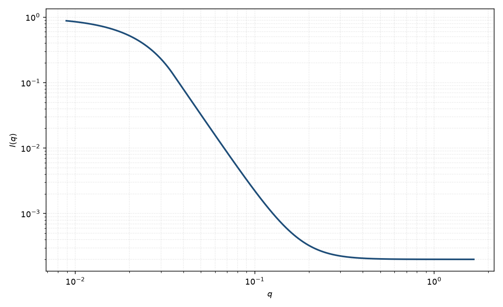

Guinier–Porod
Guinier–Porod
适用场景
需要同时描述低 $q$ 的 $R_g$ 与高 $q$ 幂律、又不想引入完整几何振荡时，用 Hammouda 的 Guinier–Porod。该衔接在交叉点强制连续，适合高分子、聚集体与多孔体系的两段曲线。
维数参数 $s$ 区分类球（$s=0$）、类棒（$s=1$）与类片（$s=2$）的 Guinier 前因子。若曲线有多层结构（两套 $R_g$），应改用统一幂律–Rg 或多级 Guinier–Porod，而不是把一个 $R_g$ 拉得过宽。
物理图像
低 $q$ 写成 $G q^{-s}\exp[-q^2 R_g^2/(3-s)]$，高 $q$ 写成 $D/q^m$。交叉波矢 $q_1$ 由两段在函数值与斜率上相接确定，因此 $D$ 不是独立参数。
这仍是形状无关的包络：它不产生球的振荡极小。磁性与核通道可以有不同的 $R_g$、$s$、$m$。
示意图

核心公式
出发点
三维 Guinier 来自振幅的二阶矩：$I=G\exp(-q^2 R_g^2/3)$。若物体在一个或两个方向上“无限长”，取向平均先给出几何前因子 $q^{-s}$（棒 $s=1$，片 $s=2$），再对剩余的有限截面做 Guinier。Hammouda 把两段写成统一的广义 Guinier，并在高 $q$ 接到幂律。
推导
无限长细棒：$I(q)\simeq(\pi L/q)\,I_{\mathrm{cs}}(q)$，截面 Guinier $I_{\mathrm{cs}}=\exp(-q^2 R_c^2/2)$，即 $s=1$、$3-s=2$。无限薄片：$I(q)\simeq(2\pi A/q^2)\exp(-q^2 T^2/12)$，即 $s=2$、$3-s=1$。合写为
$$I_{\mathrm{G}}(q)=\frac{G}{q^s}\exp\!\left[-\frac{q^2 R_g^2}{3-s}\right]\qquad(q\le q_1).$$高 $q$ 取 Porod 型幂律 $I_{\mathrm{P}}=D/q^m$。交叉点 $q_1$ 要求函数值与双对数斜率都连续。广义 Guinier 的斜率
$$\frac{\mathrm{d}\ln I_{\mathrm{G}}}{\mathrm{d}\ln q}=-s-\frac{2q^2 R_g^2}{3-s},$$幂律斜率为 $-m$。令二者在 $q_1$ 相等：$-s-2q_1^2 R_g^2/(3-s)=-m$，解出
$$q_1=\frac{1}{R_g}\sqrt{\frac{(m-s)(3-s)}{2}}.$$再由 $I_{\mathrm{G}}(q_1)=I_{\mathrm{P}}(q_1)$ 定出非独立的幅度 $D=G\exp[-q_1^2 R_g^2/(3-s)]\,q_1^{m-s}$。观测强度加本底 $B$。
低 $q$ 与渐近
$s=0$ 时低 $q$ 回到标准 Guinier $\exp(-q^2 R_g^2/3)$；$s=1,2$ 时 $q^{-s}$ 使 $q\to 0$ 发散，对应无限长棒/无限宽片——真实有限物体在更低 $q$ 仍应出现整体 Guinier。高 $q$ 渐近 $q^{-m}$；$m=4$ 即光滑界面 Porod。
本衔接是包络连续，不产生球的振荡极小。$q_1$ 不是独立拟合参数。
参数表
| 参数 | 符号 | 含义 | 单位 | 典型范围 |
|---|---|---|---|---|
| 回转半径 | $R_g$ | Guinier 区尺寸 | Å | 10–1000 Å |
| 维数 | $s$ | Guinier 前因子维数 | 无量纲 | $0$（球）、$1$（棒）、$2$（片） |
| Porod 指数 | $m$ | 高 $q$ 幂律 | 无量纲 | 1–4 |
| Guinier 幅度 | $G$ | 低 $q$ 前置因子 | 与强度单位一致 | 与 $I(0)$ 相关 |
| 标度 / 本底 | $\mathrm{scale}$, $B$ | 前置因子与常数本底 | 与强度单位一致 | 实验相关 |
拟合注意
取向：粉末数据里 $s$ 是有效维数，不是欧拉角。高度取向的棒/片应分方向拟合，或改用圆柱/层状形式因子。
多分散抹圆 $q_1$，使表观 $m$ 变缓。磁性：$s$ 与 $m$ 可以与核通道不同，若磁化沿长轴或界面分布。
可辨识性：$G$、$R_g$、$m$ 在窄窗口内相关。没有跨越 $q_1$ 的数据时，本模型退化为纯 Guinier 或纯幂律。不要与统一模型的 $P$、$B$ 同时自由拟合同一段。
相近模型
参考文献
- Hammouda, B. A new Guinier–Porod model. J. Appl. Cryst. 2010, 43, 716–719. DOI: 10.1107/S0021889810015773